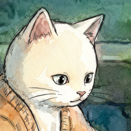

まどべ猫の勉強部屋 - 集中タイマー
Window Cat: Focus Timer
手描き風の窓辺の部屋で、猫がそばにいてくれる集中タイマー（ポモドーロ）です。窓の外は、あなたの街と同じ時間・同じ天気。雨音や焚き火の音を流しながら、自分のペースで集中できます。
よくある質問
窓の外の天気が、実際の天気と違う
位置情報の利用を許可すると、今いる街の天気（晴れ・雨・雪）に合わせて変わります。許可しない場合は、アプリの「設定」→「天気」で選べます。天気の情報は、少し時間をおいて更新されます。
画面を消すと音が止まる
アプリの「設定」で環境音がオンになっているか、iPhone の音量を確かめてください。タイマーが動いている間だけ音が流れます。
記録を消したい
アプリの「記録」画面の「記録を消す」を2回押すと消えます。記録はお使いの端末の中だけに保存されています。
A focus timer (Pomodoro) where a cat keeps you company in a cozy, hand-drawn-style room by the window. Outside, it's the same time and weather as your city. Focus at your own pace with rain or fireplace sounds.
Contact
For bug reports, feedback, or requests, please use this form. English or Japanese is fine.
Contact formFAQ
The weather outside the window doesn't match
If you allow location access, the window follows the weather in your city (clear, rain, snow). Otherwise, choose the weather in Settings → Weather in the app. Weather updates every so often.
Sound stops when the screen turns off
Check that ambient sound is on in the app's Settings and that your iPhone's volume is up. Sounds play only while the timer is running.
How do I delete my records?
Tap "Clear records" twice on the Records screen. Records are stored only on your device.